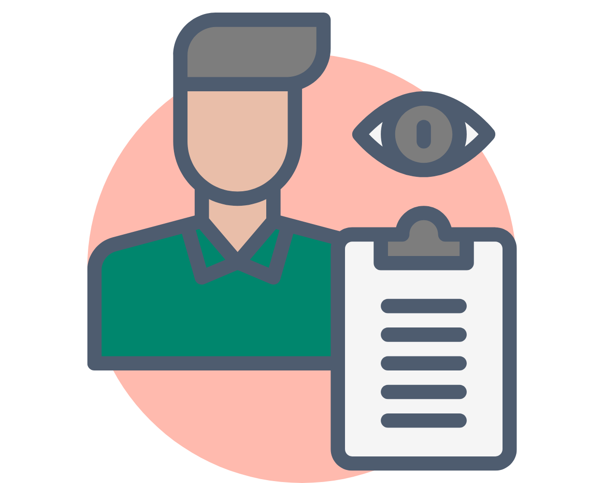

Säkerställa förutsättningar
Se till att både BAS-P och BAS-U har de nödvändiga förutsättningarna, såsom resurser
och information, för att utföra sina uppgifter på ett effektivt sätt.
Kontrollera och följa upp arbetsmiljöarbetet
Byggherren har ett ansvar för att kontinuerligt kontrollera och följa upp arbetsmiljöarbetet, särskilt vad gäller BAS-P och BAS-U. Klicka på knapparna nedan för att läsa mer om vad byggherren bör göra för att säkerställa att arbetsmiljöarbetet utförs korrekt:

Övervaka arbetsmiljöarbetet
Byggherren bör ha en plan för att övervaka arbetet, exempelvis genom stickprovskontroller.
Det är viktigt att tidigt i projektet informera om att stickprovskontroller kommer att genomföras,
samt vilka konsekvenser som gäller om reglerna inte följs.

Vidta åtgärder vid behov
Om det visar sig att BAS-P eller BAS-U inte utför sina uppgifter som de ska, eller om arbetsmiljöproblem
uppstår, måste byggherren se till att nödvändiga åtgärder vidtas för att upprätthålla en säker arbetsmiljö.